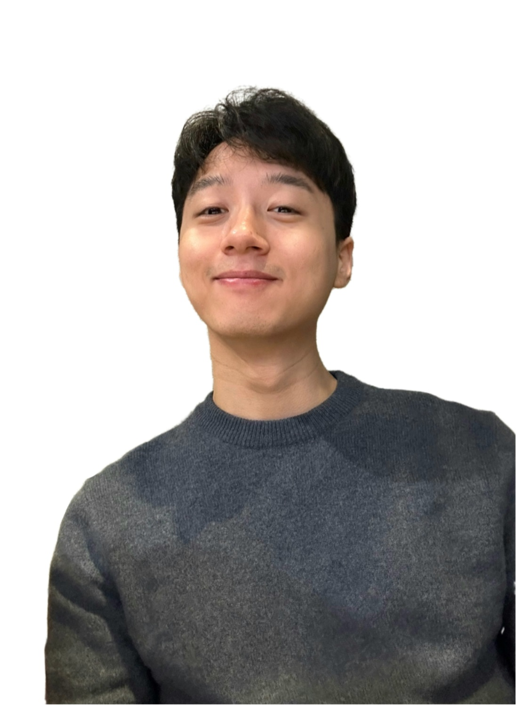

Ph.D. candidate in Artificial Intelligence
KAIST, advised by Prof. Jaegul Choo
Hi! I'm Jooyeol Yun, a Ph.D. candidate at the Kim Jaechul Graduate School of AI, KAIST, supervised by Prof. Jaegul Choo. My research focuses on:
Vector Prism: Animating Vector Graphics by Stratifying Semantic Structure
Selectively Extracting and Injecting Visual Attributes into Text-to-Image Models
SphereDiff: Tuning-free Omnidirectional Panoramic Image and Video Generation via Spherical Latent Representation
DesignLab: Designing Slides Through Iterative Detection and Correction
Devil is in the Detail: Towards Injecting Fine Details of Image Prompt in Image Generation via Conflict-free Guidance and Stratified Attention
Enabling Region-Specific Control via Lassos in Point-Based Colorization
Disentangling Subject-Irrelevant Elements against Subject in Personalized Text-to-Image Diffusion via Filtered Self-distillation
Scaling Up Personalized Image Aesthetic Assessment via Task Vector Customization
Learning to Generate Semantic Layouts for Higher Text-Image Correspondence in Text-to-Image Synthesis
iColoriT: Towards Propagating Hints to the Right Region for Interactive Colorization via Leveraging Vision Transformer
Improving Face Recognition with Large Age Gaps by Learning to Distinguish Children
* denotes equal contribution.